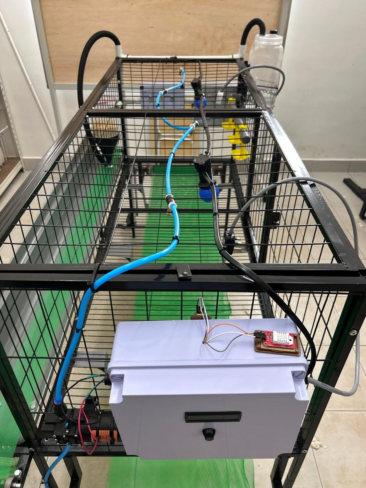

EMBEDDED SYSTEMS · IoT
Smart Chicken Coop System
An automated chicken coop system using an ESP32, DHT22 temperature sensor and MQ-137 ammonia sensor. It controls a lamp and mist pump through relay modules to help manage coop conditions.
My contribution: Embedded system programming and system integration, connecting the sensors, control outputs and monitoring functions.
Tools: ESP32, Arduino IDE, DHT22, MQ-137, relay, LCD, Wi-Fi and Google Sheets.